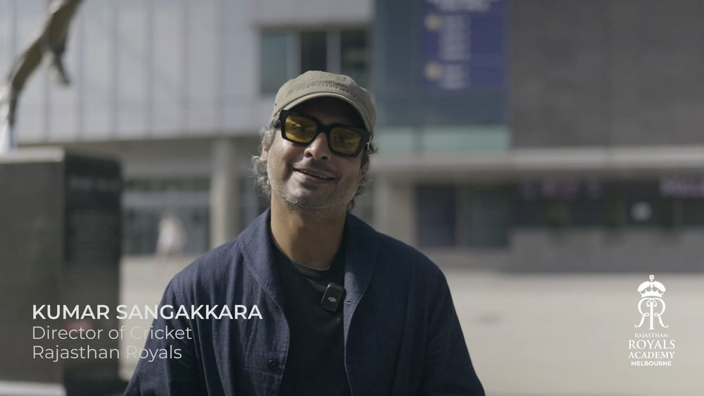
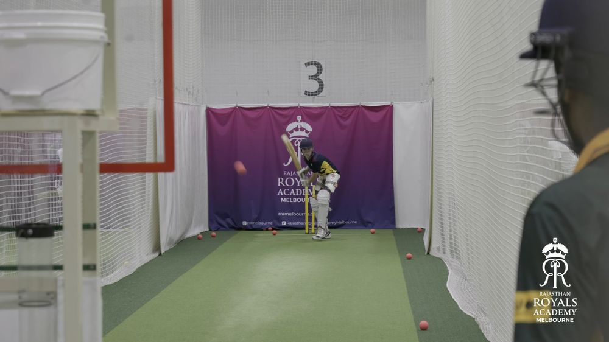
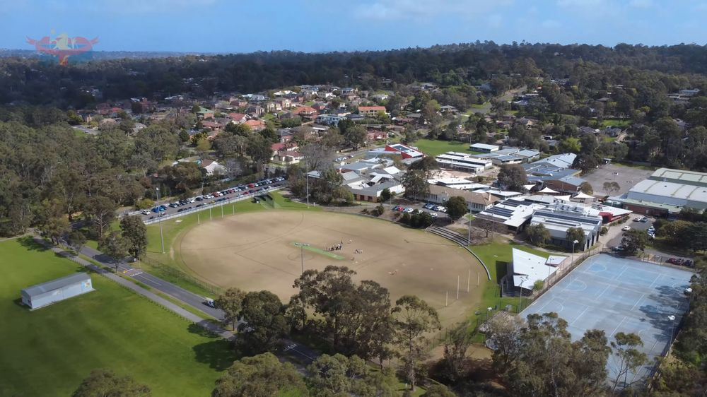
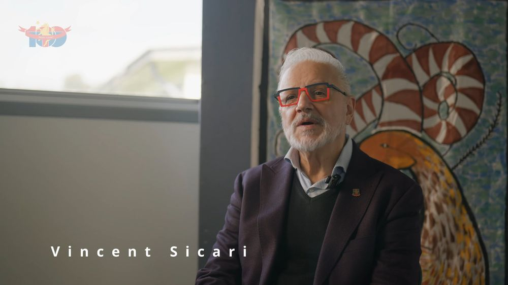
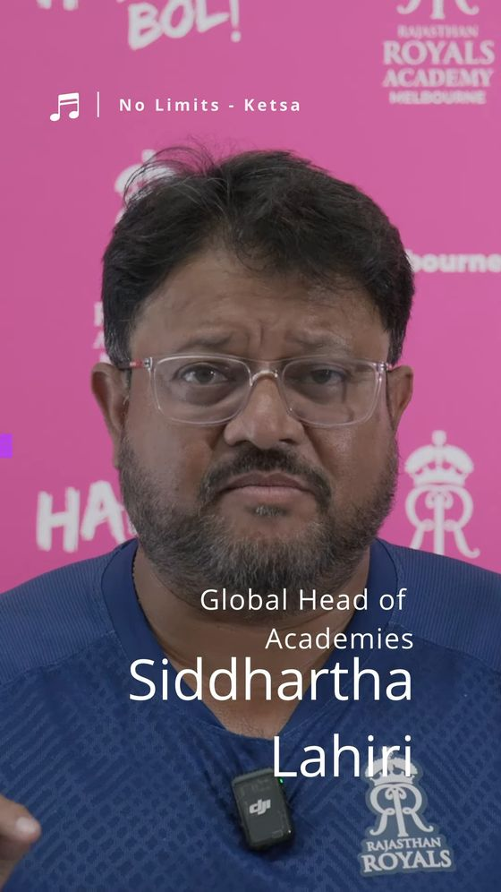
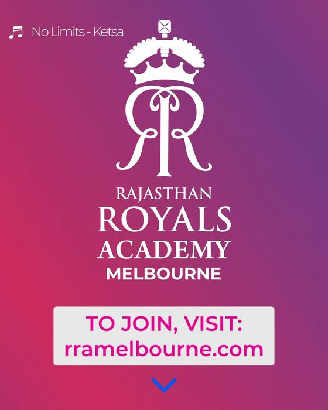

Brand & creative
Video-led content that shows the people and personality behind your business, school, team or event, with photography when you need it.
Brand video
Films that show what you do and the people behind it, with photography to go alongside.
Social content
Short vertical video and photo sets for Instagram, Facebook and TikTok.
Creative projects
Documentaries, launches and passion projects, shot and edited from start to finish.
Featured video
Brand video
Recent work




Social content


Clients
Rajasthan Royals Sri Lanka
Worked closely with the Royals, including Kumar Sangakkara, to launch a new T20 academy in Melbourne.
Eltham High School
Worked closely with the school to create an emotional, feature-length documentary celebrating its 100-year centenary.
Got a shoot in mind?
Tell me a little about what you need and when. I reply within one business day.
Book a shoot